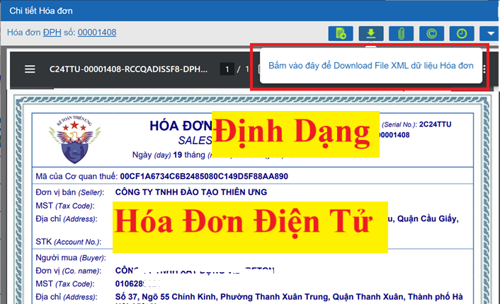

Định dạng hóa đơn điện tử đang được quy định tại điều 12 của Nghị định 123/2020/NĐ-CP được sửa đổi bởi Khoản 9 Điều 1 Nghị định 70/2025/NĐ-CP có hiệu lực từ ngày 01/06/2025 như sau:
1. Định dạng hóa đơn điện tử là tiêu chuẩn kỹ thuật quy định kiểu dữ liệu, chiều dài dữ liệu của các trường thông tin phục vụ truyền nhận, lưu trữ và hiển thị hóa đơn điện tử. Định dạng hóa đơn điện tử sử dụng ngôn ngữ định dạng văn bản XML (XML là chữ viết tắt của cụm từ tiếng Anh "eXtensible Markup Language" được tạo ra với mục đích chia sẻ dữ liệu điện tử giữa các hệ thống công nghệ thông tin).
2. Định dạng hóa đơn điện tử gồm hai thành phần: thành phần chứa dữ liệu nghiệp vụ hóa đơn điện tử và thành phần chứa dữ liệu chữ ký số. Đối với hóa đơn điện tử có mã của cơ quan thuế thì có thêm thành phần chứa dữ liệu liên quan đến mã cơ quan thuế.
3. Tổng cục Thuế xây dựng và công bố thành phần chứa dữ liệu nghiệp vụ hóa đơn điện tử, thành phần chứa dữ liệu chữ ký số và cung cấp công cụ hiển thị các nội dung của hóa đơn điện tử theo quy định tại Nghị định 123/2020/NĐ-CP.
Khoản 3 này được sửa đổi bởi Khoản 9 Điều 1 Nghị định 70/2025/NĐ-CP có hiệu lực từ ngày 01/06/2025 như sau:
3. Tổng cục Thuế xây dựng thành phần chứa dữ liệu nghiệp vụ hóa đơn điện tử và phương thức truyền nhận với cơ quan thuế. Riêng với hóa đơn giá trị gia tăng kiêm tờ khai hoàn thuế, Tổng cục Hải quan xây dựng thành phần chứa dữ liệu nghiệp vụ đối với các nội dung trên hoá đơn dành cho cơ quan hải quan và ngân hàng thương mại là đại lý hoàn thuế. Tổng cục Thuế công bố thành phần chứa dữ liệu nghiệp vụ hóa đơn điện tử và phương thức truyền nhận với cơ quan quản lý thuế để áp dụng thống nhất; cung cấp công cụ hiển thị các nội dung của hóa đơn điện tử theo quy định tại Nghị định này.
4. Tổ chức, doanh nghiệp bán hàng hóa, cung cấp dịch vụ khi chuyển dữ liệu hóa đơn điện tử đến cơ quan thuế bằng hình thức gửi trực tiếp phải đáp ứng yêu cầu sau:
a) Kết nối với Tổng cục Thuế thông qua kênh thuê riêng hoặc kênh MPLS VPN Layer 3, gồm 1 kênh truyền chính và 1 kênh truyền dự phòng. Mỗi kênh truyền có băng thông tối thiểu 5 Mbps.
b) Sử dụng dịch vụ Web (Web Service) hoặc Message Queue (MQ) có mã hóa làm phương thức để kết nối.
c) Sử dụng giao thức SOAP để đóng gói và truyền nhận dữ liệu.
5. Hóa đơn điện tử phải được hiển thị đầy đủ, chính xác các nội dung của hóa đơn đảm bảo không dẫn tới cách hiểu sai lệch để người mua có thể đọc được bằng phương tiện điện tử.
Kế Toán Diệu Tâm mời các bạn tham khảo thêm:

Kế Toán Diệu Tâm mời các bạn tham khảo thêm: